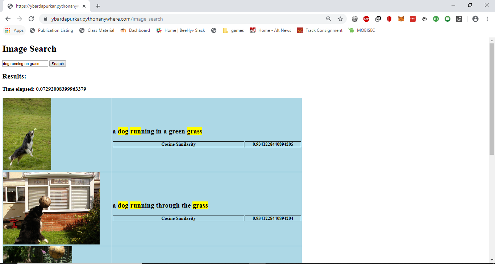
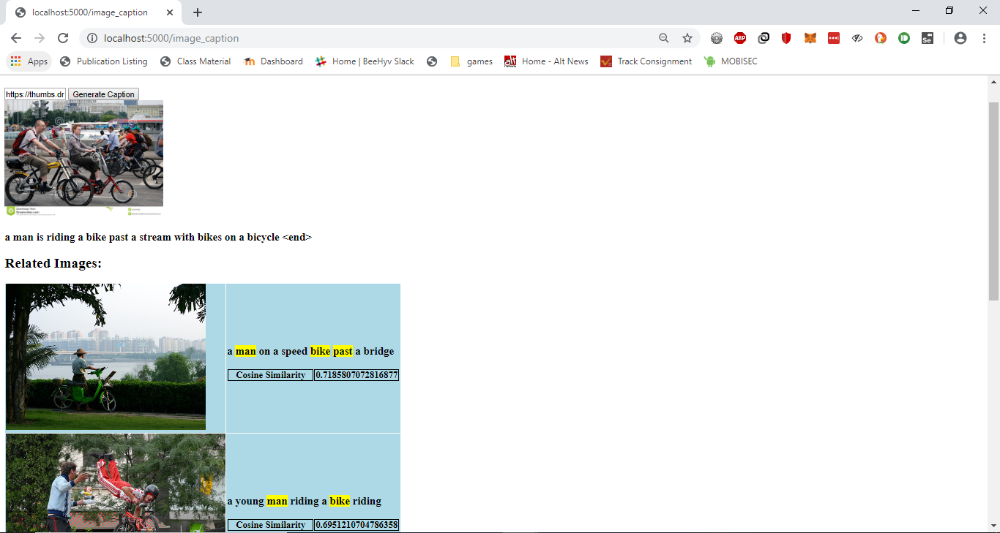

Data Mining Term Project (Fall 2019)
Movie Search and Classifier
Phase 3: Image Search
Demo Link
GitHub Link
Dataset
https://www.kaggle.com/hsankesara/flickr-image-dataset
Pre-processing
The dataset contains 30000 images. For this project, I have selected 2000 images to generate captions.
I am using PorterStemmer and stopwords from nltk package to decreaes the number of unique tokens in the dictionary.
The dictionary is of the format:
Image Captioning
Image captioning is generating textual description or caption for an image. The model architecture being used is similar to Neural Image Caption Generation with Visual Attention. This uses tf.keras and eager execution.
Captions are generated using TensorFlow in google Colab, using this code
The notebook will download the MS-COCO dataset, preprocess and cache a subset of the images using Inception V3, train an encoder-decoder model, and use it to generate captions on new images.
Running Image Captioning Model with CPU hosting platforms
The training of the captioning model takes around 3 to 4 hours when run in Google Colab. We need to save this trained model by saving all the trained model weights. We use tensorflow’s `save_weight(path_to_save, save_format=‘tf’)` method.
We need to save the `encoder`, `decoder` and `decoder.attention` weights.
decoder.save_weights('/image_caption_model/decoder.gru', save_format='tf')
encoder.save_weights('/image_caption_model/encoder.gru', save_format='tf')
decoder.attention.save_weights('/image_caption_model/attention.gru', save_format='tf')
Then, we also need to save the `tokenizer` and other meta-data such as `max_length`, `attention_features_shape`, `embedding_dim`, `units`, `vocab_size` that was changed during preprocessing and training.
We use pickle library in python to save this metadata.
with open('/image_caption_model/tokenizer.gru.pickle', 'wb') as handle:
pickle.dump(tokenizer, handle, protocol=pickle.HIGHEST_PROTOCOL)
meta_dict = {}
meta_dict['max_length'] = max_length
meta_dict['attention_features_shape'] = attention_features_shape
meta_dict['embedding_dim'] = embedding_dim
meta_dict['units'] = units
meta_dict['vocab_size'] = vocab_size
with open('/image_caption_model/meta.gru.pickle', 'wb') as handle:
pickle.dump(meta_dict, handle, protocol=pickle.HIGHEST_PROTOCOL)
When generating caption for a new image we create the Encoder, Decoders that were defined in the image captioning models and load these saved weights to those models. Also we load the meta-data using pickle.
When we train our model in google Colab or other computer’s with GPU it uses the CuDNNGRU layer. But when the model is loaded in any other CPU only (or with Cuda incompatible GPUs) machines it uses GRU layer. So our saved weights were based on CuDNNGRU model but loaded on GRU model. So the caption generation will not work.
This can be mitigated by using only GRU layer in Colab when training the model.
def gru(units):
return tf.keras.layers.GRU(units,
return_sequences=True,
return_state=True,
recurrent_activation='sigmoid',
recurrent_initializer='glorot_uniform')
Contributions
- Modified the code to create a csv file containing the image url and caption for each image in the dataset. Then, implemented the TF-IDF based text search functionality on the captions, as implemented in phase 1 to return appropriate results for the search query

- Tried to host the caption generating model on Pythonanywhere, but was not able to install tensorflow on Pythonanywhere due to disk size limitations. However, I was able to run it on my own system. The user enters the url of an image file available online, and a caption is generated, along with a list of 5 images that match the submitted images based on the caption based on TF-IDF search functionality. The demo is included in the video here.

Challenges Faced
- Training the image captioning model and generating captions takes about 3 hours. There were challenges running the code on Goggle colab, such as keeping the session active for the entire duration so as to prevent disconnection and losing all data.
- Installing tensorflow on Pythonanywhere was not possible as the size of the package would exceed the disk size limit for the free account. Hence, I was unable to deploy the Image Captioning model on Pythonanywhere.
However, I was able to run it on my own system. The model that was loaded from the saved files generates captions for the images given, though sometimes they do not match the captions generated by the model generated on Google Colab.
References
Links to other sections of the project